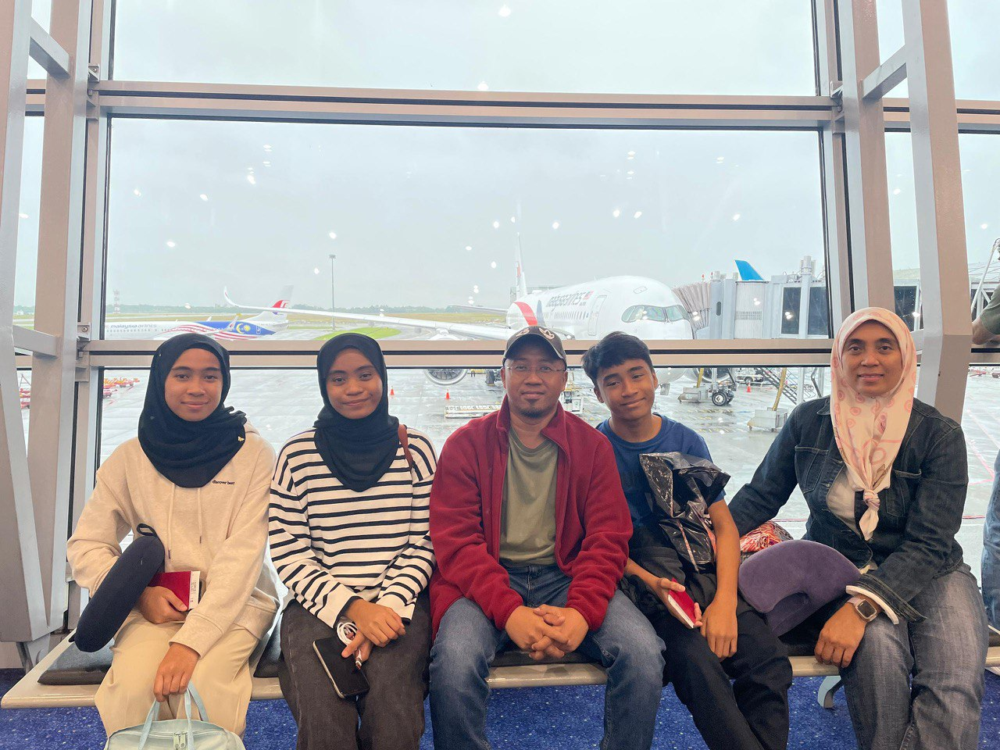

My Mom & Dad
About my father
My father is a very simple person in every aspect, and he doesn’t talk much. However, he is the one who contributes the most financially, especially to support my siblings and me in our studies, particularly me, as I’m currently in university. Whatever we need or wish for, he ensures we get it. In short, he may not express his love through words, but he shows it through acts of service. My father’s hobbies include cycling, joining marathons, and hiking. He is, and always will be, a passionate football fan.
About my mother
My mother is someone who cares deeply for our family. I call her “Momma.” She is a perfectionist, and her character has shaped me into a disciplined person. However, she is quite serious, and since I’m the playful one in the family, I enjoy teasing her and making her annoyed it’s just my way of bonding. My mother has sacrificed so much for us. When it comes to household chores, she’s the one who takes care of everything, especially cooking.
Family Vacation London, UK
15-23thSeptember 2024


Captures my family vacation conquering the London City!! With beautiful weather ❤️
The Middle Child
Her name is Alya Sarah Binti Mohd Farhan. She was 16 years old. As the middle child, she has a unique character in my family and I called her as the Chameleon because she was a funny buddy that can fit in everytime I came home. After all, life would be so boring without their flair theatrics.
The Eldest Child
His name is Yazid Emran Bin Mohd Farhan. He was 14 years old. He's gamer that can play for whole day without eat üò§ and he is control freak boyyy that must go their way especially dinner time. As the eldest child he is also very protective boy, always ask me and others if we are not around. That's means he will ensure that he know where were we been ‚ù§Ô∏è